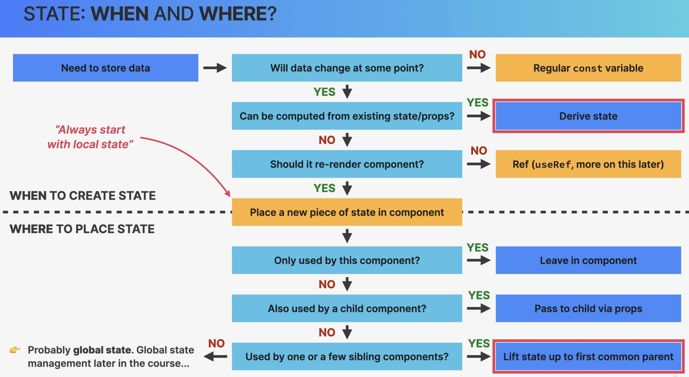

Fundamentals of state management
State Management:
Deciding when to create pieces of state, what types of state are necessary, where to place each piece of state and how data **flows through the app.
—> giving each piece of state a home
As applications grow, state cannot be generally kept inside each component.
Local vs. Global State
Inside React, a piece of state is either local or global.
Local state:
state needed only by one or few components
state is defined inside the component, only this component and its child components have access to it (by passing via props)
Global state:
state that many components might need
shared state that is accessible to every component in the entire application
Hint
Global state can be defined via React API or external state management tools such as Redux.
Hint
We should always start with local state and only use global state, if it is needed.
State: When and where?

